← 返回阅读库 · 原论文目录
论文讲解阅读文档 · 多模态语言模型 · v045
OWL-ViT Simple Open-Vocabulary Object Detection with ViT[2205.06230]
视频时长 00:07:44；讲解文字 3,965 字符；提取讲解画面 29 张。按视频原顺序阅读，每段文字保留时间戳。
文字来自整段视频的自动语音转写，按自然停顿分段，并与 PPT / 论文页面 / 演示画面对齐。未将讲解压缩为摘要；术语、数字和口述公式请结合画面及原论文核对。 阅读稿已校正规范部分明确术语误识别；原始逐字稿和每处修改记录另行保留。
讲解画面为源视频截图（640×360），不是可编辑 PPT 文件。全片按每秒 2 帧扫描内容变化，逐步展开页保留；连续动画保留代表画面。清晰度受源视频限制。
下载完整资料包 · 含离线 HTML、PDF、Word、全部 PPT 画面和字幕。
原论文与材料
Simple Open-Vocabulary Object Detection with Vision Transformers · 下载完整 PDF（28 页）
按时间阅读
00:00:00–00:00:08 · 画面 001
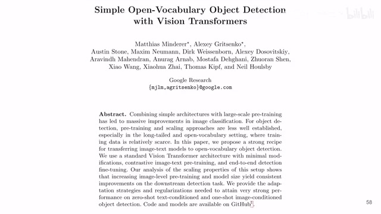
00:00:00–00:00:08 · 画面 001大家好,今天我们来快速说一篇论文 Simple Open Vocabulary Object Detection with Vision Transformers 就是我们之前提到的 OWL-ViT 本文的核心的贡献主要就是第一,它告诉我们如何从一个 image level 的 pre-training 给它 transfer 到 open vocabulary object detection
00:00:08–00:00:12 · 画面 002
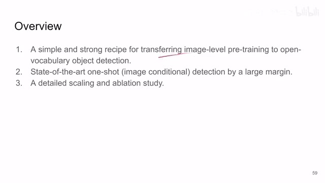
00:00:08–00:00:12 · 画面 00200:00:12–00:00:17 · 画面 003
00:00:12–00:00:17 · 画面 00300:00:17–00:00:23 · 画面 004
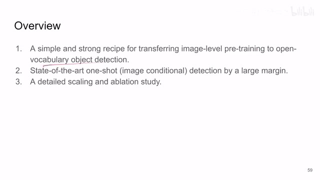
00:00:17–00:00:23 · 画面 004就是你给他一些你要找的东西，然后让他根据这个文本在图片里面找。那么第二个贡献就是这个 one shot 或者是 few shot 这个 detection，也就是说你给他一张图像，让他在另一张图像里面找和这张图像里面相似的部分。然后他有一些 ablation，感兴趣的朋友你自己到论文里面看。下面我们重点关注他的这个方法，这个方法他还是一个两阶段的方法。
00:00:23–00:00:35 · 画面 005
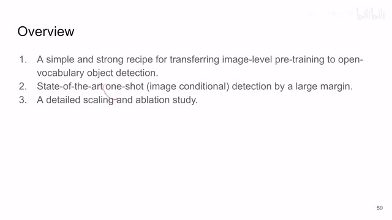
00:00:23–00:00:35 · 画面 00500:00:35–00:00:36 · 画面 006
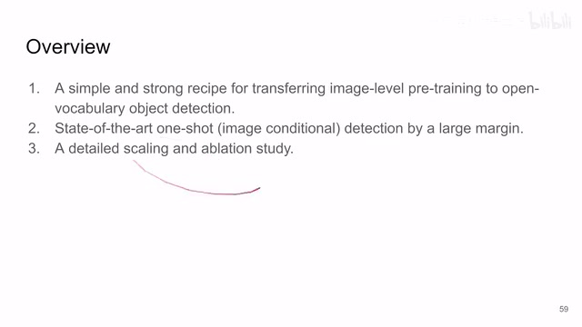
00:00:35–00:00:36 · 画面 00600:00:36–00:00:39 · 画面 007
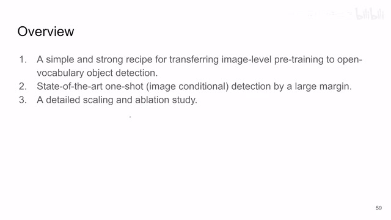
00:00:36–00:00:39 · 画面 00700:00:39–00:01:17 · 画面 008
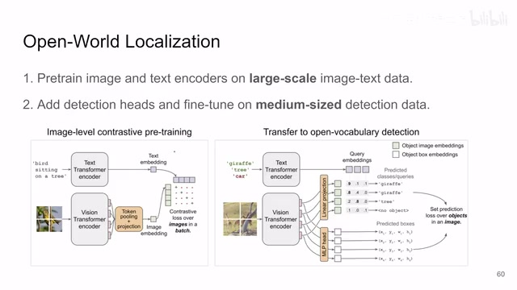
00:00:39–00:01:17 · 画面 008那第一个阶段呢，就是在一个很大的数据集上，那么这个数据集呢，就是 image 和这个 text 图像和文本的这么一个 pair。然后呢，文本进到这个 text encoder，这个图像进到 vision encoder。然后两个出来的 law embedding 根据 contrastive loss，一个 batch 里面同一个 pair 出来的这个 embedding 相互靠近，不同的 pair 呢相互远离。那这个呢就跟 CLIP 的这个训练非常像。
那么因为你的这个数据集是一个图像还有一个文字这样一个配对的形式，所以它是非常容易获取的。因此这个数据集的尺度呢是非常的大的。那这个呢是这个 contrastive pre-training，这是第一个阶段。那么第二个阶段呢，就是要把我们训练好的这个 text encoder 还有 vision encoder 给它 transfer 到我们真正的需要的 task 上，也就是这个 detection task。那么这个时候呢，我们就需要有每个 object 它的 label 还有它的那个 bounding box 它在图像中的位置。那么这个时候怎么做呢，你可以看到针对每一张图像，它有一个候选的这些单词，就是有哪些东西可能会出现在这个图像里面。
00:01:17–00:01:18 · 画面 009
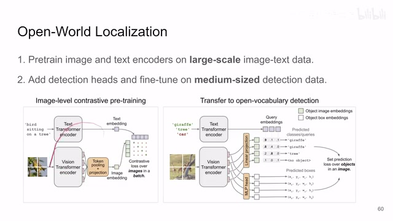
00:01:17–00:01:18 · 画面 00900:01:18–00:03:18 · 画面 010
00:01:18–00:03:18 · 画面 010把这些文本送到这个 text encoder 里面。那相当于我有一串 embedding。然后我的这个图像进到 Vision Transformer 里面。那么这个时候呢我们对这个 Vision 这些 token不再做之前的这个 pooling。不再提一个 embedding 了而是针对每一个小的 patch。每一个 token我都去比较也就是说这里的一个 token。
过一个 linear projection 之后跟所有的这个 text query 来比较。看一眼这个 token 跟哪个 text 最相近。最相近的那个就是。它的这个类别通过这样的这个比相似的方法。就把这个分类的问题给做了。这也是 Contrastive Learning 里面那个经典的方法了。那么与此同时呢你的 token 还送到一个 MLP 里面。
这个 MLP 呢帮助你确定这个 token 的这个 bounding box。也就是说这个 token它对应了这个物体。它在图像中的这个位置。坐标是什么那有了这个分类有了这个坐标对吧它是不是就可以跟我们的 ground truth。去建立这个 loss那么你可以看到整个这个结构跟 DETR它是非常相似的只不过区别于 DETR 呢DETR 里面它是用了一个专门的这个 transformer decoder。
那么在 decoder 里面用一些 learnable 的 query用它去查一个 object 出来。查出来然后呢然后呢再用匈牙利算法。去匹配我们的预测结果和这个 ground truth。然后再加 loss那这里呢直接把这个 decoder 拿掉了。我们的 query 呢是从这个 text encoder 里面出来的。
然后我们 Vision Transformer 里面所有的 token 呢就直接跟这个 query 做相似度就可以了，它是一个没有 decoder 的简化版的 DETR。至于后面的 loss 呢，那都是一样的。那么这个呢是这个 transfer 的阶段。那么以上呢就是本文最核心的两个步骤。那么注意呢，这篇文章里面重要的是它的大部分的参数都集中在这个 encoder 里面。你可以看到它是没有 decoder 的同时呢，它也没有说去把我们的 text 和这个 vision 给它混合起来。
00:03:18–00:03:22 · 画面 011
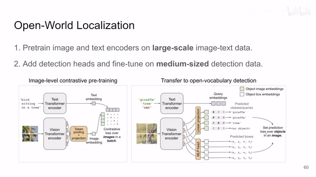
00:03:18–00:03:22 · 画面 01100:03:22–00:03:23 · 画面 012
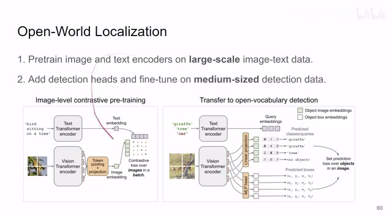
00:03:22–00:03:23 · 画面 01200:03:23–00:03:25 · 画面 013
00:03:23–00:03:25 · 画面 01300:03:25–00:04:35 · 画面 014
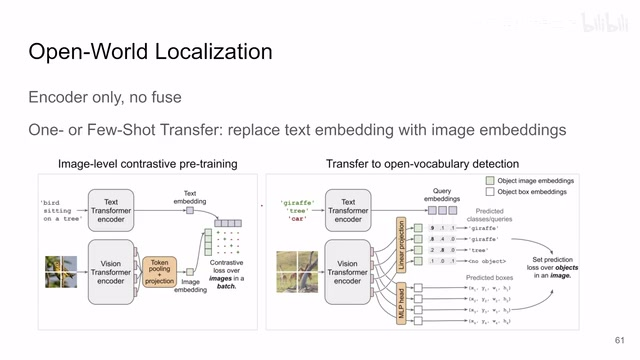
00:03:25–00:04:35 · 画面 014那么这样子带来一个好处就是，首先你训的这些参数它基本都是有用的，都在 encoder 里面。那么其次呢，就是你去查很多个这个 text 很多个这个 image 的时候，可以把它们单独的送到网络里面做一次，然后做出来的结果呢，你直接算相似度就可以了。你不是说你的每一个图像的 patch 要跟这个 text 组合再去跑一遍网络。那这样子呢，可以一次性的处理很多个 text 和 image。
那么当你想做这个 one shot 和 few shot transfer 的时候，就是也就是说，我用图片的形式给他一个目标，让他去检测这个目标的时候呢，你这个时候呢，你就把这个 text encoder 换成一个另外一个这个 vision encoder 对吧？你就把你的想要检测的目标也送到这个 vision encoder 里面，然后呢，你这里就有另一组这个 image embedding，然后呢，你同样的再算相似度就好了。所以呢，这是一个很自然而然的就做到了这个 one shot 或者 few shot 这个 transfer。
是一个非常灵活的这么一个 pipeline。那么具体到它的实现上，针对这个 vit 前面都没有什么更改，在 pretrain 的时候呢，你不是做这个 token average pooling，你是把它做这个叫做 multi-head attention pooling。那这个东西呢，是来自于这篇文章，这个 set transformer。本质上呢，你把它理解成最后这个 pooling 呢，它是一个 transformer decoder。
00:04:35–00:04:47 · 画面 015
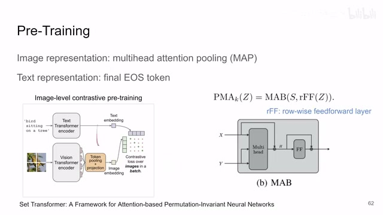
00:04:35–00:04:47 · 画面 01500:04:47–00:04:48 · 画面 016
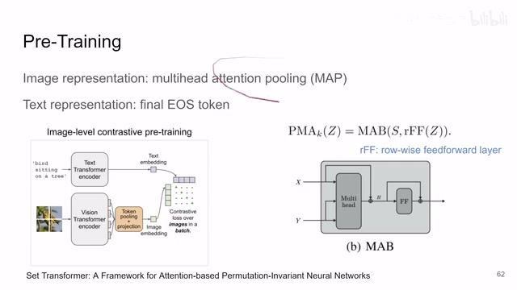
00:04:47–00:04:48 · 画面 01600:04:48–00:04:54 · 画面 017
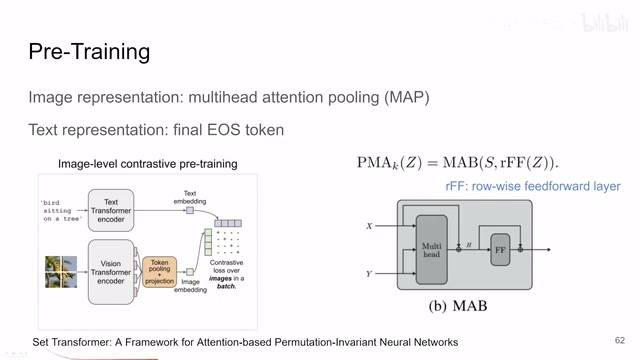
00:04:48–00:04:54 · 画面 01700:04:54–00:04:55 · 画面 018
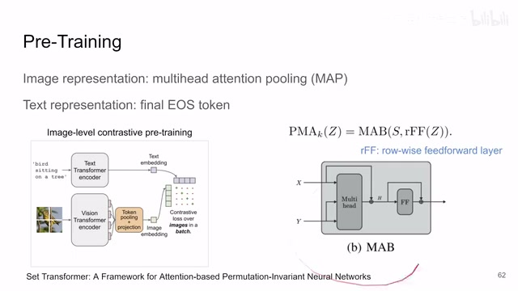
00:04:54–00:04:55 · 画面 01800:04:55–00:05:44 · 画面 019
00:04:55–00:05:44 · 画面 019这个呢，是你所有的前面的这个 encoder 出来的这个 token，这个 x 呢，就是一个 learnable query。你这里因为只需要输出一个 embedding，所以这个 x 就是一个 token。然后呢，你就做这个 multihead attention 加上这个 feed-forward network，跟 transformer decoder 非常像这么一个结构，就相当于用这一个 token 把这一串这个 token 总结出来了。
那么这个呢，是你这个 Vision Transformer 最后怎么把所有的 token 组合起来怎么做 pooling，这是第一个。那作为这个 text representation 呢，对吧？你这一句话送到这个 text encoder 里面，那么作者呢就是取你 transformer 里面处理到最后一个 token，就是这个句子结束的这个 token 的时候处理完它，它对应的这个它对应的这个 embedding，它就是这个 text embedding，然后它俩做相似就好了。
这是一个很经典的设计。那后面你在做这个 detection transfer 的时候呢，这里还是有一些技巧的。比如说你的数据集里面每一个物体呢，它可以有很多个 label。那么第二个就是你在对这个物体做分类的时候，作者用的是这个 focal sigmoid，具体的区别我们也提到过这篇文章，它的这个图在这里，感兴趣的朋友呢，你自己到这篇文章里面去看一下。那么然后呢，还有一个细节就是我们针对每一张图像，我不是说
00:05:44–00:05:57 · 画面 020
00:05:44–00:05:57 · 画面 02000:05:57–00:05:59 · 画面 021
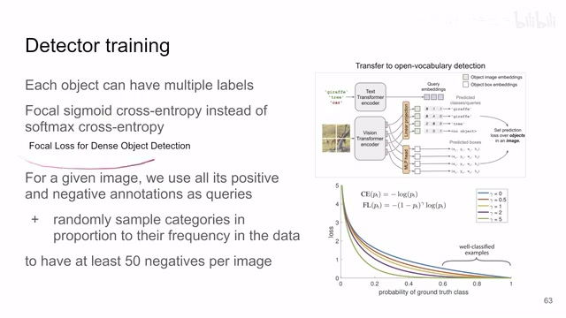
00:05:57–00:05:59 · 画面 02100:05:59–00:06:28 · 画面 022
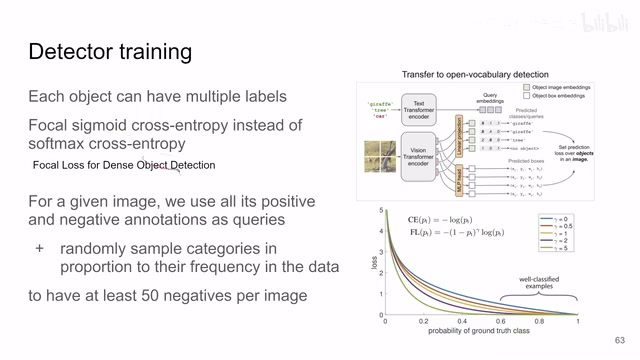
00:05:59–00:06:28 · 画面 022把所有的这个可能的出现的文本都去跟他对比的不然这个对吧 open vocabulary 怎么可能呢你把所有的词都跟这个图像里面的这个 token 做对比这是不太现实的那这些怎么做呢作者呢是说我把所有的标记好的这个正样本比如说这个场景录这个数啊然后还有负样本，这个是数据集中标记好的。首先这些 label 我们是要送进 text encoder，同时作者还随机的在我们的所有的这些 label 中去采样，采样的频率是正比于这些 label 在数据集中出现的频率的。那么这些 label 既然和我们的图片没有什么关系，理论上应该也是 negative sample，就相当于你随便去数据集中抓几个跟我们当前这个图片无关的
00:06:28–00:06:30 · 画面 023
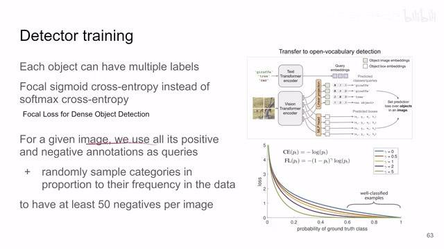
00:06:28–00:06:30 · 画面 02300:06:30–00:06:31 · 画面 024
00:06:30–00:06:31 · 画面 02400:06:31–00:06:32 · 画面 025
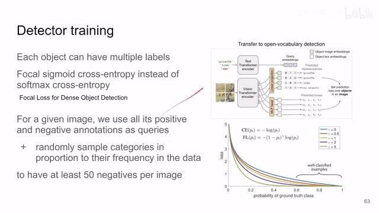
00:06:31–00:06:32 · 画面 02500:06:32–00:07:12 · 画面 026
00:06:32–00:07:12 · 画面 026这么几个 label。那么大概一个图有至少 50 个这个负样本。然后呢，你就相当于每个 patch 出来对吧，它的 embedding 跟所有的这 50 多个跟所有的 50 多个这个 queryembedding 或者叫 textembedding 对吧，他们做相似度，然后最后选一个就好了。这是最后在这个 transfer learning 的时候的一些细节。
00:07:12–00:07:13 · 画面 027
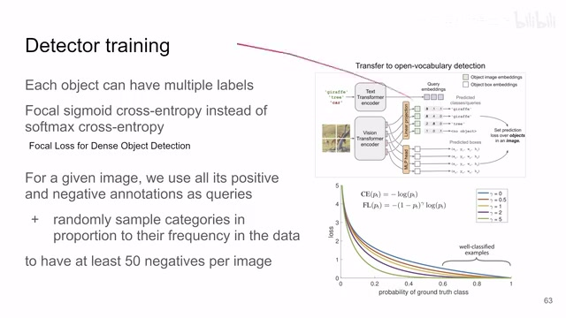
00:07:12–00:07:13 · 画面 02700:07:13–00:07:43 · 画面 028
00:07:13–00:07:43 · 画面 028好的，那么以上就是本文主要的技术细节了。本质上就是两个阶段 Pretraining，像 Clip 一样的 Pretraining，然后呢再做这个 Transfer。其中的设计呢非常简洁，重点呢是它为了很多的数据进去，而且针对这个 Open Vocabulary，而不是说数据集中固定了一系列的词组做了哪些的改动。那么还是感兴趣的朋友呢，非常推荐你到原文查看查看它各种详细的实验的配置，然后读读它的代码。那么感谢您的收看，再见。
00:07:43–00:07:44 · 画面 029
00:07:43–00:07:44 · 画面 029转写与来源说明 · 1 个自动复核提示
保留 69 个原始语音片段，1 个片段触发自动复核提示。提示仅用于定位可能的术语、重复或识别问题，不等于已确认错误。
讲解画面为源视频截图（640×360），不是可编辑 PPT 文件。全片按每秒 2 帧扫描内容变化，逐步展开页保留；连续动画保留代表画面。清晰度受源视频限制。
原视频：paper/合集_2026-10-16_多模态语言模型/[论文速览]OWL-ViT Simple Open-Vocabulary Object Detection with ViT[2205.06230].mp4
SHA-256：5507fa896b0ffff67f865064d9d264b91f2207bd856f116b8a0dce435eb2a418
用一些 learnable 的 query
全文按视频语音与画面制作。原论文可从上方链接下载；完整资料包保留全文、原始逐字稿、字幕和校对记录。